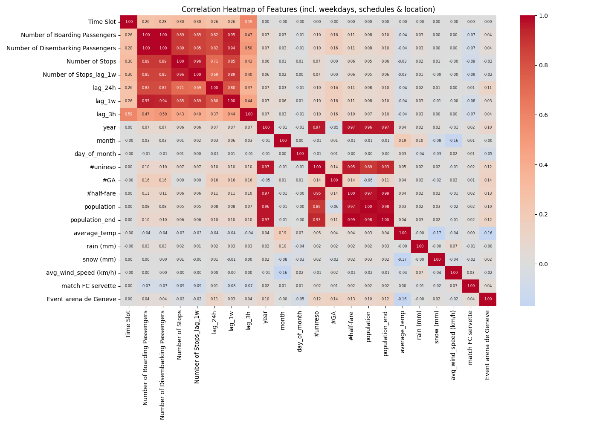
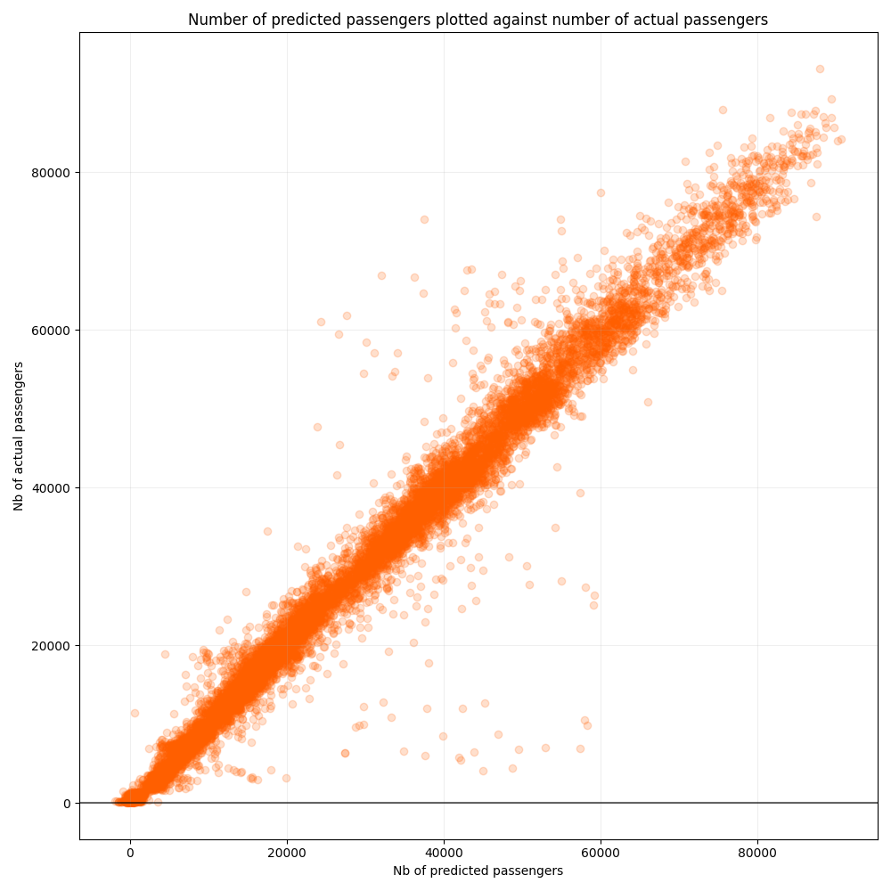
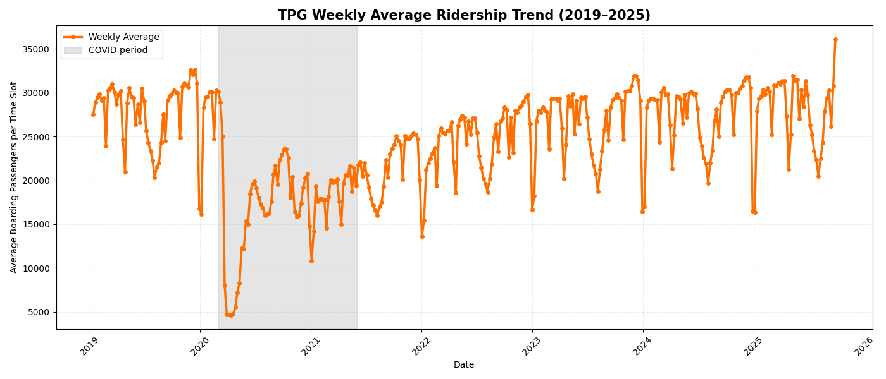

Forecasting the Number of Passengers on Geneva’s TPG Network per Time Slot
Machine Learning, Data Science, Public Transport, Forecasting, Time Series
1. Introduction and Motivation
Taking a bus, tram, or train is part of daily life, but the experience is always more enjoyable when one can find a seat and avoid overcrowding. Anticipating passenger demand is therefore a key challenge for both travelers and public transport operators.
This project develops a machine learning model to forecast the number of boarding passengers on Geneva’s public transport network (TPG) on an hourly basis. Such forecasts could help passengers choose less crowded travel times and support TPG in short-term capacity planning.
We focus on a network-wide prediction setting, capturing broad mobility patterns while respecting real-world forecasting constraints such as strong seasonality, non-linear demand, and structural breaks, such as COVID-19 period.
This work was completed as a group project in the Data Science Fundamentals (DSF) program at the University of St. Gallen.
2. Methodology
Datasets cleaning
Core Passenger Data
We used the TPG ridership dataset, covering 2019 onwards with hourly counts for the whole network (~58,000 observations).
Data cleaning steps:
- Removed rows with missing or non-definitive values
- Excluded 2 and 3 am slots due to insufficient data
- One-hot encoded categorical variables such as day-of-week and schedule type
Final dataset: 54,098 rows × 61 columns.
import pandas as pd
import numpy as np
df = pd.read_csv("00_datasets/original/tpg.csv", sep=";")
df = df.dropna(subset=["Time Slot"]) # Remove rows with missing Time Slot
df = df[df["donnees_definitives"] == True] # Remove non-definitive data
df = df[df["Time Slot"] != "-"] # Remove invalid time slots
df["Date"] = pd.to_datetime(df["Date"]) # Parse date and time
df["Time Slot"] = pd.to_numeric(df["Time Slot"])
df = df[~df["Time Slot"].isin([2, 3])] # Drop 2 and 3 am observations
# One-hot encoding of categorical variables
week_day_one_hot = pd.get_dummies(df["Day Week"], prefix="day")
schedule_type_one_hot = pd.get_dummies(df["Schedule Type"], prefix="schedule")
months_one_hot = pd.get_dummies(df["month"], prefix="month")
years_one_hot = pd.get_dummies(df["year"], prefix="year")
time_slots_one_hot = pd.get_dummies(df["Time Slot"], prefix="slot")
# Combine all features
df_encoded = pd.concat([df, week_day_one_hot, schedule_type_one_hot,
months_one_hot, years_one_hot, time_slots_one_hot], axis=1)
# Drop redundant and original categorical columns
columns_to_drop = [
"Day Week", # Encoded as day_
"Schedule Type", # Encoded as schedule_
"Index Day Week", # Redundant with day_of_week
"donnees_definitives", # All True after "False" values were removed
"Week Index" # Not used in our predictive models
]
df_encoded = df_encoded.drop(columns=columns_to_drop)
df_encoded = df_encoded.dropna().reset_index(drop=True) # drop any remaining NaN values
df_final = df_encoded.sort_values(["Date", "Time Slot"]).reset_index(drop=True)Weather Data
Weather influences passenger behavior. We included daily average temperature, rainfall, and wind speed from a station 5 km from Geneva city center. To avoid leakage (i.e. to ensure that only information available at prediction time is used), weather features were lagged by one day.
Demographics and Abonnements
- Canton population data (yearly) to capture structural shifts,
- Counts of GA, Half-Fare, and Unireso subscriptions filtered to Geneva postal codes, aggregated yearly,
- 2025 values extrapolated from 2024 growth rates
# import data of halbtax and GA
df = pd.read_csv("00_datasets/original/generalabo_halbtax.csv", sep=';')
# Drop flag columns
df = df.drop(['GA_AG_flag', 'HTA_ADT_meta-prezzo_HFT_flag'], axis=1)
# convert all of the values to integer
df[['Postal code', 'GA_AG', 'HTA_ADT_meta-prezzo_HFT']] = df[['Postal code', 'GA_AG', 'HTA_ADT_meta-prezzo_HFT']].astype(int)
# select all rows which have a value between 1200 and 1299 in the Postal Code column (canton of Geneva)
df_geneva = df[df["Postal code"].between(1200, 1299)]
# sum them up by years
df_yearly = df_geneva.groupby('Jahr_An_Anno_Year')[['GA_AG', 'HTA_ADT_meta-prezzo_HFT']].sum().reset_index()
# rename the features
df_yearly = df_yearly.rename(columns={"Jahr_An_Anno_Year": "year", "GA_AG": "#GA", "HTA_ADT_meta-prezzo_HFT": "#half-fare"})
# import data of the CH dataset (all networks)
df_verbunde = pd.read_csv("00_datasets/original/verbunde.csv", sep=';')
# drop unnecessary columns
df_verbunde = df_verbunde.drop(['Flag'], axis=1)
# select only the data that is acutally = unireso
df_unireso = df_verbunde[df_verbunde["Verbund_Communaute_Comunita_Network"] == "unireso"]
# sum them up per year again
df_unireso_yearly = df_unireso.groupby('Jahr_An_Anno_Year')[['Anzahl_Nombre_Quantita_Number']].sum().reset_index()
# rename the features
df_unireso_yearly = df_unireso_yearly.rename(columns={"Jahr_An_Anno_Year": "year", "Anzahl_Nombre_Quantita_Number": "#unireso"})
# merge the two datasets
df_abos_total = df_unireso_yearly.merge(df_yearly, on="year", how="outer")
# calculate the growth rates 2019/2020 for the half fare feature
hf19 = df_abos_total[df_abos_total.year == 2019]["#half-fare"].values[0]
hf20 = df_abos_total[df_abos_total.year == 2020]["#half-fare"].values[0]
uni20 = df_abos_total[df_abos_total.year == 2020]["#unireso"].values[0]
growth = hf20 / hf19
# calculate and fill in the value at the right spot in the pandas dataframe
df_abos_total.loc[df_abos_total.year == 2019, "#unireso"] = int(uni20 / growth)
# get 2023 and 2024 values
uni23 = df_abos_total[df_abos_total.year == 2023]["#unireso"].values[0]
ga23 = df_abos_total[df_abos_total.year == 2023]["#GA"].values[0]
hf23 = df_abos_total[df_abos_total.year == 2023]["#half-fare"].values[0]
uni24 = df_abos_total[df_abos_total.year == 2024]["#unireso"].values[0]
ga24 = df_abos_total[df_abos_total.year == 2024]["#GA"].values[0]
hf24 = df_abos_total[df_abos_total.year == 2024]["#half-fare"].values[0]
# compute growth rates
g_uni = uni24 / uni23
g_ga = ga24 / ga23
g_hf = hf24 / hf23
# compute 2025 values
uni25 = int(uni24 * g_uni)
ga25 = int(ga24 * g_ga)
hf25 = int(hf24 * g_hf)
# add new row
df_abos_total.loc[len(df_abos_total)] = [2025, uni25, ga25, hf25]
# drop all the data before 2019 (not used in our analysis)
df_abos_total = df_abos_total[df_abos_total.year >= 2019].reset_index(drop=True)
df_abos_total = df_abos_total.astype(int)
# export the cleaned csv
df_abos_total.to_csv("00_datasets/clean/cleaned_abo_data.csv", index=False)
Events in Geneva
- Servette FC football matches,
- Concerts at Arena de Genève.
These events were encoded as binary features.
All datasets were merged by date to create the final modeling dataframe.
Preprocessing
We experimented several preprocessing methods (applied to our numerical features) to optimize model stability and performance, implemented with a scikit-learn pipeline.
- Standardization gave the lowest MAE/MSE for most models
- Min-Max scaling performed similarly for linear models
- Non-linear transformations (Yeo-Johnson, Quantile) generally worsened performance
- Random Forests is robust to feature scaling and does not require preprocessing
# Creating the pipeline for preprocessing and model fitting
num_feature = ['average_temp', "rain (mm)","snow (mm)","avg_wind_speed (km/h)",
"Number of Stops_lag_1w",
"population", "#unireso","#GA","#half-fare",
"lag_24h", "lag_1w", "lag_3h"]
preprocess = ColumnTransformer(
[("minmax", MinMaxScaler(feature_range=(0,1)), num_feature)],
remainder = "passthrough")
y_train_s = y_train
pip = Pipeline([
("prep", preprocess),
("model", LinearRegression(fit_intercept=True))
]).fit(X_train, y_train_s)# Creating the pipeline for preprocessing and model fitting
num_feature = ['average_temp', "rain (mm)","snow (mm)","avg_wind_speed (km/h)",
"Number of Stops_lag_1w",
"population", "#unireso","#GA","#half-fare",
"lag_24h", "lag_1w", "lag_3h"
]
preprocess = ColumnTransformer(
[("quantile", QuantileTransformer(n_quantiles=1000, output_distribution = "uniform", random_state=42), num_feature)])
# Standardize y
mu, sigma = y_train.mean(), y_train.std()
y_train_s = (y_train - mu) / sigma
pip = Pipeline([
("prep", preprocess),
("model", MLPRegressor(
hidden_layer_sizes=(128, 64, 32),
learning_rate_init=0.001,
activation="relu",
solver="adam",
alpha=0.01,
batch_size=64,
max_iter=500,
early_stopping=True,
validation_fraction=0.1,
random_state=42))
]).fit(X_train, y_train_s)
# Prediction
y_pred_train = pip.predict(X_train)
y_pred_test = pip.predict(X_test)
# De-standardize y
y_pred_test = y_pred_test* sigma + mu
y_pred_train = y_pred_train* sigma + muFeature Engineering
To improve predictive performance, we engineered additional lagged features designed to capture temporal dependencies, trends, and recurring patterns.
- For passenger counts: 24-hour lag, 1-week lag, 3-hour lag
- For number of stops per time slot: 1-week lag (avoid data leakage, nb stops is not known before the hour was realized)
- Calendar variables: Year, month, day of month, Day-of-week, schedule type, time slot (all one-hot encoded)
# Lagged Number of Stops
# sort by date and then time slot
df = df.sort_values(['Date', 'Time Slot']).reset_index(drop=True)
# shift by 22 rows * 7 (1 day = 22 observations, since we dropped 2 and 3am)
# shift works because we have equally many observations per time slot across the dataset (2,459)
df['Number of Stops_lag_1w'] = df['Number of Stops'].shift(22 * 7)
# Lagged Boarding passengers
df["lag_24h"] = df["Number of Boarding Passengers"].shift(22) # same time yesterday
df["lag_1w"] = df["Number of Boarding Passengers"].shift(22 * 7) # same time 1 week before
df["lag_3h"] = np.where(df["Time Slot"]==4, # 3 hours before
df["Number of Boarding Passengers"].shift(1),
df["Number of Boarding Passengers"].shift(3))Visualizations
From the below correlation matrix, three observations can be made:
Dominant Seasonality: the 1-week lag (0.95) and 24-hour lag (0.82) are the strongest predictors, proving high temporal periodicity.
Demographic Redudancy: Population, Year, and Subscriptions are highly colinear, which requires regularization.
Weak External Signals: Weather and Event features show near-zero correlation (<0.05), suggesting a limited global impact.

3. Modeling Strategy
We evaluated 21 configurations across:
- Model families: Linear, Neural Network, Random Forest
- Time-series Cross-validation (TimeSeriesSplit)
- Preprocessing techniques: Standardization, Min-Max, Yeo-Johnson
- COVID-19 inclusion/exclusion
All models were trained and evaluated using a time-aware validation strategy to respect the temporal ordering of observations.
3.1 Naïve Predictions:
Naïve benchmarks provide a critical reference point for assessing whether complex models add real predictive value. We implemented three simple baselines: predicting the last observed value, the historical mean, and the historical median for each time slot.
Our goal: build models outperforming MAE of 18,000 (obtained with simple these naïve methods).

3.2 Linear Models
Basic Linear Regression: Focus on Simplicity
We first estimated a standard linear regression model using calendar, weather, and demographic features. This model serves as a transparent and interpretable baseline, highlighting the limits of linear assumptions in the presence of strong non-linear demand patterns.
Linear Model with Time Lags: Learning from the Past
Incorporating lagged passenger counts substantially improves performance by allowing the model to exploit temporal dependencies, both very short term fluctuations and weekly patterns in passenger demand.
import pandas as pd
import numpy as np
import matplotlib.dates as mdates
import matplotlib.pyplot as plt
import matplotlib.dates as mdates
from sklearn.linear_model import LinearRegression
from sklearn.metrics import mean_squared_error, mean_absolute_error
from sklearn.preprocessing import StandardScaler
from sklearn.compose import ColumnTransformer
from sklearn.pipeline import Pipeline
from sklearn.model_selection import TimeSeriesSplit
from sklearn.feature_selection import SequentialFeatureSelector
df = pd.read_csv("00_datasets/merged_dataframes.csv")
# Create separated dataframes for features and target
features = [
"slot_0","slot_1","slot_4","slot_5","slot_6","slot_7","slot_8","slot_9","slot_10","slot_11","slot_12","slot_13","slot_14","slot_15","slot_16","slot_17","slot_18","slot_19","slot_20","slot_21","slot_22","slot_23",
'day_1-Lundi', 'day_2-Mardi', 'day_3-Mercredi', 'day_4-Jeudi','day_5-Vendredi', 'day_6-Samedi', 'day_7-Dimanche',
'average_temp', "rain (mm)","snow (mm)","avg_wind_speed (km/h)",
"Number of Stops_lag_1w",
"schedule_VACANCES",
"month_1","month_2","month_3","month_4","month_5","month_6","month_7","month_8","month_9","month_10","month_11","month_12",
"match FC servette","Event arena de Geneve",
"population",
"#unireso","#GA","#half-fare",
"lag_24h", "lag_1w", "lag_3h"
]
X = df[features]
y = df["Number of Boarding Passengers"]
# Initial chronological train-test split (70-30%)
split_idx = int(0.7 * len(df))
X_train, X_test = X.iloc[:split_idx], X.iloc[split_idx:]
y_train, y_test = y.iloc[:split_idx], y.iloc[split_idx:]
# Creating the pipeline for preprocessing, cross validtaion and model fitting
num_feature = ['average_temp', "rain (mm)","snow (mm)","avg_wind_speed (km/h)",
"Number of Stops_lag_1w",
"population",
"#unireso","#GA","#half-fare",
"lag_24h", "lag_1w", "lag_3h"
]
# TimeSeriesSplit instead of KFold for Cross Validation
cv = TimeSeriesSplit(n_splits=30)
preprocess = ColumnTransformer(
[("standa", StandardScaler(), num_feature)],
remainder = "passthrough"
)
model = LinearRegression(fit_intercept=True)
sfs = SequentialFeatureSelector(
estimator= model,
n_features_to_select="auto",
direction="forward",
cv=cv,
n_jobs=-1
)
pip = Pipeline([
("preprocess", preprocess),
("sfs", sfs),
("model", model)
]).fit(X_train, y_train)
# Extracting the results of the CV- name of the number of column (not) kept
# names after preprocessing
feature_names = pip.named_steps["preprocess"].get_feature_names_out()
# mask of selected features
mask = pip.named_steps["sfs"].get_support()
selected_features = feature_names[mask]
dropped_features = feature_names[~mask]
print("Selected features:")
print(selected_features)
print("\nDropped features:")
print(dropped_features)
# Prediction
y_pred_train = pip.predict(X_train)
y_pred_test = pip.predict(X_test)
# Evaluate errors
mse_train = mean_squared_error(y_train, y_pred_train)
mse_test = mean_squared_error(y_test, y_pred_test)
mae_train = mean_absolute_error(y_train, y_pred_train)
mae_test = mean_absolute_error(y_test, y_pred_test)Cross Validation
Passenger demand forecasting is inherently a time-series problem: predictions must always be made using past information only. Standard random cross-validation techniques would therefore be inappropriate, as they mix past and future observations and lead to overly optimistic results. To address this, we applied time-aware cross-validation using TimeSeriesSplit. Concretely, the data is split into successive training and validation folds using an expanding window approach. Each fold trains the model on historical data and evaluates it on a strictly later time period.
 All preprocessing steps (scaling, transformations, feature selection) were embedded inside a scikit-learn Pipeline, ensuring that transformations are learned exclusively from the training portion of each fold. This design fully prevents data leakage and guarantees a fair evaluation.
All preprocessing steps (scaling, transformations, feature selection) were embedded inside a scikit-learn Pipeline, ensuring that transformations are learned exclusively from the training portion of each fold. This design fully prevents data leakage and guarantees a fair evaluation.
Hyperparameters (such as regularization strength or tree depth) were tuned over wide ranges, with the optimal configuration automatically selected based on average validation performance. Compared to rolling-window validation, the expanding-window approach is better suited to capturing long-term seasonal patterns (weekly and yearly cycles) that are central to public transport demand.
Regularized Linear Models (Lasso, Ridge, Elastic Net)
Regularization techniques were applied to mitigate overfitting and handle multicollinearity among features. Lasso performed best among linear models, particularly when COVID-19 observations were excluded from training.
import pandas as pd
import numpy as np
import matplotlib.pyplot as plt
import matplotlib.dates as mdates
from sklearn.metrics import mean_squared_error, mean_absolute_error
from sklearn.preprocessing import StandardScaler
from sklearn.compose import ColumnTransformer
from sklearn.pipeline import Pipeline
from sklearn.linear_model import Lasso
from sklearn.linear_model import LassoCV
from sklearn.model_selection import TimeSeriesSplit
df = pd.read_csv("00_datasets/merged_dataframes.csv")
# Define covid period
covid_start = pd.to_datetime("2020-03-01")
covid_end = pd.to_datetime("2021-06-01")
# Filter out covid period (keep only rows before or after it)
mask = (df["Date"] < covid_start) | (df["Date"] > covid_end)
df = df[mask].copy()
# Create separated dataframes for features and target
features = [
"slot_0","slot_1",
"slot_4","slot_5","slot_6","slot_7","slot_8","slot_9","slot_10","slot_11","slot_12","slot_13","slot_14","slot_15","slot_16","slot_17","slot_18","slot_19","slot_20","slot_21","slot_22","slot_23",
'day_1-Lundi', 'day_2-Mardi', 'day_3-Mercredi', 'day_4-Jeudi','day_5-Vendredi', 'day_6-Samedi', 'day_7-Dimanche',
'average_temp', "rain (mm)","snow (mm)","avg_wind_speed (km/h)",
"Number of Stops_lag_1w",
"schedule_VACANCES",
"month_1","month_2","month_3","month_4","month_5","month_6","month_7","month_8","month_9","month_10","month_11","month_12",
"match FC servette","Event arena de Geneve",
"population",
"#unireso","#GA","#half-fare",
"lag_24h", "lag_1w", "lag_3h"
]
X = df[features]
y = df["Number of Boarding Passengers"]
# Initial chronological train-test split (70-30%)
split_idx = int(0.7 * len(df))
X_train, X_test = X.iloc[:split_idx], X.iloc[split_idx:]
y_train, y_test = y.iloc[:split_idx], y.iloc[split_idx:]
# TimeSeriesSplit instead of KFold
cv = TimeSeriesSplit(n_splits=20)
# Creating the pipeline for preprocessing and model fitting
num_feature = ['average_temp', "rain (mm)","snow (mm)","avg_wind_speed (km/h)",
"Number of Stops_lag_1w",
"population",
"#unireso","#GA","#half-fare",
"lag_24h", "lag_1w", "lag_3h"
]
preprocess = ColumnTransformer(
[("standa", StandardScaler(), num_feature)],
remainder = "passthrough"
)
alpha = np.logspace(-4, 4, 100)
pip = Pipeline([
("prep", preprocess),
("model", LassoCV(
alphas=alpha,
fit_intercept=True,
cv=cv))
]).fit(X_train, y_train)
# Best alpha
print("Best alpha:", pip.named_steps['model'].alpha_)
# Prediction
y_pred_train = pip.predict(X_train)
y_pred_test = pip.predict(X_test)
# Evaluate errors
mse_train = mean_squared_error(y_train, y_pred_train)
mse_test = mean_squared_error(y_test, y_pred_test)
mae_train = mean_absolute_error(y_train, y_pred_train)
mae_test = mean_absolute_error(y_test, y_pred_test)3.3 Neural Network
We implemented a multilayer perceptron (MLP) regressor with a funnel-shaped architecture (128–64–32 neurons) for feature compression.
Activation Function: ReLU (Rectified Linear Unit) to capture non-linear spikes (e.g. rush hours).
Preprocessing: Strict normalization wrapped in a Pipeline to prevent data leakage.
Regularization: L2 penalty and Early Stopping to prevent overfitting.

X = df[features]
y = df["Number of Boarding Passengers"]
split_idx = int(0.7 * len(df))
X_train, X_test = X.iloc[:split_idx], X.iloc[split_idx:]
y_train, y_test = y.iloc[:split_idx], y.iloc[split_idx:]
# Creating the pipeline for preprocessing and model fitting
num_feature = ['average_temp', "rain (mm)","snow (mm)","avg_wind_speed (km/h)",
"Number of Stops_lag_1w",
"population",
"#unireso","#GA","#half-fare",
"lag_24h", "lag_1w", "lag_3h"
]
preprocess = ColumnTransformer(
[("standa", StandardScaler(), num_feature)],
remainder = "passthrough"
)
cv = TimeSeriesSplit(n_splits=10)
# Creating the pipeline for preprocessing and MLP Regressor
base_pipe = Pipeline([
("prep", preprocess),
("model", MLPRegressor(
hidden_layer_sizes=(128, 64, 32),
learning_rate_init=0.001,
activation="relu",
solver="adam",
alpha=0.009,
batch_size=64,
max_iter=500,
early_stopping=True,
validation_fraction=0.1,
random_state=42
))
])
ttr = TransformedTargetRegressor(regressor=base_pipe,
transformer=StandardScaler())
param_distributions = {
"regressor__model__hidden_layer_sizes": [
(64,), (64, 32), (128, 64), (128, 64, 32)
],
"regressor__model__alpha": [0.0001, 0.001, 0.005, 0.01],
"regressor__model__learning_rate_init": [0.0005, 0.001, 0.005],
"regressor__model__batch_size": [32, 64, 128],
"regressor__model__max_iter": [300, 500, 800]
}
search = RandomizedSearchCV(
estimator=ttr,
param_distributions=param_distributions,
n_iter=5,
scoring="neg_mean_squared_error",
cv=cv,
random_state=42,
refit=True,
verbose=1,
n_jobs=-1
)
search.fit(X_train, y_train)
y_pred_train = search.predict(X_train)
y_pred_test = search.predict(X_test)
mse_train = mean_squared_error(y_train, y_pred_train)
mse_test = mean_squared_error(y_test, y_pred_test)
mae_train = mean_absolute_error(y_train, y_pred_train)
mae_test = mean_absolute_error(y_test, y_pred_test)3.4 Random Forest
The Random Forest Regressor emerged as the most accurate model overall. Its ensemble structure allows it to capture complex non-linear interactions and overlapping seasonal patterns (daily, weekly, yearly) while remaining robust to noise. A cross validation was also applied to the Random Forest models (as well as on neural networks) with the package RandomizedSearchedCV.
Performance:
- MAE ≈ 1,500
- Relative error ≈ 6.4%
- Equivalent to 6 trams worth of passengers per hour
This represents a 50% improvement over the best linear model (Lasso without Covid).
X = df[features]
y = df["Number of Boarding Passengers"]
split_idx = int(0.7 * len(df))
X_train, X_test = X.iloc[:split_idx], X.iloc[split_idx:]
y_train, y_test = y.iloc[:split_idx], y.iloc[split_idx:]
cv = TimeSeriesSplit(n_splits=5)
# Creating the pipeline for preprocessing, hyperparameter tuning (cv) and model fitting
param_distributions = {
"n_estimators": [100, 300],
"max_depth": [10, 20, None],
"min_samples_leaf": [2, 5],
"max_features": ["sqrt", 0.5],
"max_samples": [None, 0.8]
}
search = RandomizedSearchCV(
RandomForestRegressor(random_state=72, bootstrap = True),
param_distributions=param_distributions,
n_iter=12,
scoring="neg_mean_squared_error",
cv=cv,
random_state=72,
refit=True,
verbose=1,
return_train_score=True)
search.fit(X_train, y_train)
# Prediction
y_pred_train = search.predict(X_train)
y_pred_test = search.predict(X_test)
mse_train = mean_squared_error(y_train, y_pred_train)
mse_test = mean_squared_error(y_test, y_pred_test)
mae_train = mean_absolute_error(y_train, y_pred_train)
mae_test = mean_absolute_error(y_test, y_pred_test)4. Results Interpretation
Overview Model’s Performances
Model performance was compared using test-set MAE.

Non-linear models clearly outperform linear approaches
Advanced models like Random Forest and Neural Networks achieve 45-50% better accuracy than linear models by capturing complex non-linear demand patterns.
COVID-19 filtering is essential
Excluding the pandemic period yields a 35% improvement, confirming that training should focus on “normal” transport behavior.

5. Evaluation and Challenges
Overfitting Trade-off: Bias VS Variance
While Random Forests achieved the highest accuracy, they also exhibited a higher degree of overfitting (2.2, VS 1.1 for linear models), highlighting the classic bias–variance trade-off in forecasting problems.
Unsuccessful Approaches
- Yeo-Johnson and Quantile transformations increased error
- SARIMAX proved unfeasible due to complex, overlapping seasonalities
6. Outlook and Future Work
Several extensions could further enhance the practical value of this work: - Line-level or stop-level forecasting (data is publicly available) - Integration into real-time TPG apps (see image below) - Exploring Deep learning architectures (LSTM, Transformers) - Probabilistic forecasting for uncertainty quantification

7. Conclusion
This project demonstrates that network-wide passenger demand on Geneva’s TPG system can be forecast with high accuracy using machine learning methods. Random Forest models outperform linear approaches by effectively capturing non-linear, seasonal, and structural patterns.
Such forecasts could support both passenger decision-making and operational planning, illustrating how data science can contribute to more efficient and user-friendly public transport systems.
Appendix
Data Source
Acknowledgements
This project was completed as part of the Data Science Fundamentals (DSF) program at the University of St. Gallen. I thank the professors and teaching assistants for their guidance, as well as my group members for their collaboration throughout the project.